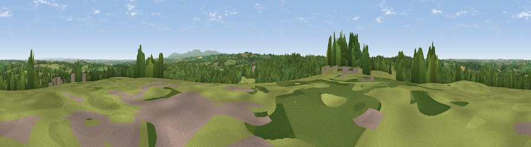

Viewpoint near Halwill Junction
#17584 in England · top 29% of its area beats it · near Halwill JunctionThe view, rendered

A 360° render of this exact spot computed from the terrain model, tree cover and land cover — summer colours, afternoon light, calibrated against photographs of famous viewpoints. Real trees, hedges and buildings will differ in detail.
The panorama
Grey silhouette: terrain skyline in each direction (720 bearings, Earth curvature and refraction included). Dashed green: skyline with trees (+15 m) and buildings (+8 m) as obstacles. Blue strip: how far the ground is visible on each bearing.
Where the view opens
Wedge length = distance to the farthest visible ground on that bearing (vegetation-aware). Rings at 10, 25 and 50 km.
What fills the view
59% grassland · 37% woodland · 2% cropland · 1% built-up ·
Angular shares of the visible panorama (visual magnitude), not map area. Landscape diversity 0.37 (0–1 Shannon).
Key numbers
More beautiful places nearby
The staircase of upgrades: each row has a higher view potential than everything closer. Driving times are estimates from straight-line distance, calibrated against real road routing — check an actual route before setting out.
| Place | Direction | Drive | Score |
|---|---|---|---|
| Viewpoint near Beaworthy | SSE · 4 km | ~10 min | 57.3 |
| Viewpoint near Highampton | NE · 5 km | ~11 min | 59.5 |
| Viewpoint near Hollacombe | WNW · 6 km | ~14 min | 60.3 |
| Viewpoint near Bratton Clovelly | SSE · 7 km | ~15 min | 60.9 |
| Viewpoint near Petrockstowe | NNE · 8 km | ~17 min | 65.5 |
| Sourton Tors | SE · 15 km | ~27 min | 74.8 |
| Viewpoint near Sourton | SE · 16 km | ~29 min | 75.7 |
| Yes Tor | SE · 18 km | ~31 min | 78.5 |
50.79517, -4.20245 · source: screening · position refined by local search. Computed location — check access rights before visiting.